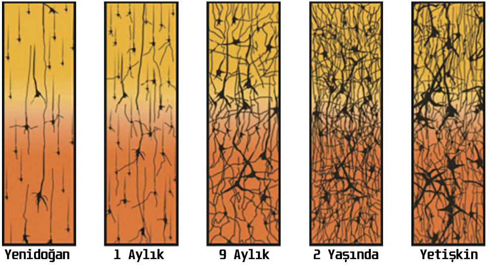

İnsanlarla yaptığımız günlük konuşmalardan kültür birikimimize kadar, yaşamımız boyunca kazandığımız bütün deneyimler, beynimizdeki mikroskobik ayrıntıları biçimlendirir. Nöral açıdan bakıldığında kim olduğunuz, nerede bulunmuş ve neler yağmış olduğunuza bağlıdır. Beyniniz yorulmak bilmeden biçim değiştirir ve sahip olduğu devreler sistemini sürekli olarak yeniden kurar. Deneyimleriniz benzersiz olduğundan, beyninizdeki nöral ağların içerdiği geniş ve ayrıntılı örüntüler de benzersizdir. Beyniniz yaşamınız boyunca değişmeye devam edeceğinden, kimliğiniz de aslında yer değiştiren bir hedeften farksızdır; nihai varış noktası yoktur.
Nörobilim günlük hayatımın bir parçası olduğu halde, bir insan beynini elime her aldığımda ona hayranlıkla bakakalırım. Yabana atılmayacak ağırlığını (yetişkin bir insan beyni yaklaşık 1,5 kilogram ağırlıktadır), tuhaf, jölemsi kıvamını ve derin yarıklarla birbirinden ayrılan şişkin kıvrımlı yüzeyini bir kenara bırakalım; beynin çarpıcı yönü, fiziksel varlığının ta kendisidir. Bu alelade madde kütlesi, yarattığı zihinsel süreçlerle öyle bir tezat oluşturur ki...
Düşünce ve düşlerimizin, anılarımız ve deneyimlerimizin tümü bu tuhaf nöral dokudan doğar. Kimliğimiz, beynin çapraşık elektrokimyasal ateşlenme örüntülerinde saklıdır. Bu etkinliklerin sonlanması, bizim de sonumuz demektir. Etkinliklerin, hasar ya da ilaçlara bağlı olarak karakter değiştirmesi, bizim de hiç sektirmeden karakter değiştirmemiz anlamına gelir. Vücudun diğer bütün kısımlarında izlenenden farklı olarak, beyinde küçük bir hasarın gelişmesi, kişiliğinizde kökten değişimlere yol açabilir. Bunun nasıl mümkün olabildiğini anlamak için, her şeyi en baştan ele alalım.
Biz insanlar, tümüyle aciz halde doğarız. Yürüyene kadar bir yıl geçer; biçimlenmiş düşünceleri dile dökene kadar kabaca iki yıl, başımızın çaresine bakar hale gelene kadar da birçok yıl daha ... Hayatta kalmak için çevremizdeki insanlara tümüyle bağımlıyızdır. Şimdi bir de memelilerin çoğu için geçerli duruma bakalım.
Sözgelimi yunuslar, daha doğumda yüzmeye başlarlar; zürafalar ayakta durmayı saatler içinde öğrenirler; bir zebra yavrusu da doğumu izleyen kırk beş dakika içinde koşabilir. Hayvanlar alemi içindeki akrabalarımızın, doğumdan kısa süre sonra kazandıkları bu bağımsızlık oldukça çarpıcıdır.
İlk bakışta diğer türler için büyük bir avantaj gibi görünen bu durum, aslında önemli bir sınırlamaya işaret eder. Hayvan yavrularındaki bu hızlı gelişimin nedeni, beyinlerinin büyük oranda önceden programlanmış bir şablona göre bağlantılar kurmasıdır. Ancak bu hazırlıklılık için ödenen bedel de esneklik olacaktır. Kendini bir anda Kuzey Kutup Bölgesi'ndeki bir tundrada, Himalayalar'daki bir dağın tepesinde ya da Tokyo kentinin ortasında bulan bahtsız bir gergedan düşünün. Bu gergedanın yeni bölgeye uyum gösterme becerisi yoktur; ki, bu bölgelerde gergedan bulunmamasının nedeni de budur zaten. Önceden programlanmış bir beyinle doğma stratejisi, ekosistem içindeki belirli bir bölgede işe yarar. Ama hayvanı o bölgeden çıkardığınızda yaşama ve gelişme şansı düşük olacaktır.
İnsanlar ise aksine, buzlu tundralardan yüksek dağlara ya da vızır vızır işleyen kentlere kadar birçok farklı ortamda yaşama becerisine sahiptir. Bunun mümkün olmasının nedeniyse, gelişimi şaşılası ölçüde eksik kalmış birer beyinle doğuyor olmamızdır. İnsan beyni, her şey devrelerine "kazınmış" halde ortaya çıkmaz; onun yerine, yaşamsal deneyimlerin ayrıntılarıyla sürekli olarak yeniden biçimlenme olanağı tanır kendisine. Yardıma muhtaç halde geçirilen uzun dönemler, işte bu sürecin sonucudur. Genç beyin, bu zaman aralıklarında çevresine uyum gösterecek biçimde yavaş yavaş yoğrulmaktadır. Çünkü yaşam karşısında değişmez değil, esnektir.
Genç beyinlerdeki esnekliğin sırrı nedir? Bunun yeni hücre oluşumuyla ilgili olduğu söylenemez; hatta çocuk ve yetişkinlerdeki beyin hücrelerinin sayısı aynıdır. İşin sırrı, bu hücrelerin birbirine nasıl bağlandığında yatar.
Yeni doğan bir bebeğin nöronları birbirinden oldukça farklı ve bağlantısızdır. Yaşamın ilk iki yılında, aldıkları duyusal bilgilere bağlı olarak nöronlar birbirleriyle çok hızlı biçimde bağlantı kurmaya başlarlar; öyle ki, bebeğin beyninde saniyede yaklaşık iki milyon yeni bağlantı, yani sinaps oluşur. İki yılın sonunda bebekteki sinapsların sayısı yüz trilyonu aşarak, bir yetişkindeki sinaps sayısının iki katına ulaşır.
Birçok hayvan, bazı içgüdüler ve davranışlar için genetik olarak önceden programlanmış halde doğar; yani bu içgüdü ve davranışlar kalıp halinde beyne "kazınmış" durumdadır. Sahip oldukları genler, bu hayvanların vücut ve beyinlerinin belirli biçimlerde inşasının, yani neye dönüşecekleri ve nasıl davranacaklarının talimatını verir. Bir sineğin, önünden geçen bir gölgeden kaçma refleksi, bir kızılgerdanın kış geldiğinde güneye uçma içgüdüsü, bir ayının kış uykusuna yatma isteği, bir köpeğin, sahibini koruma dürtüsü ... Bunların hepsi beyne kazınmış içgüdü ve davranışlara örnektir. Önceden programlanmış olmak, bu canlılara doğumdan itibaren ebeveynleri gibi hareket etme, bazı durumlarda da kendi yiyeceklerini temin edip diğerlerinden bağımsız olarak hayatta kalma olanağı sağlar.
İnsanlarda durum biraz farklıdır. Dünyaya geldiğimizde bizim beyinlerimiz de belirli oranda genetik ön-programlamadan geçmiş durumdadır. Soluk alırken, ağlarken, süt emerken, yüzleri tanırken ve anadilimizin ayrıntılarını öğrenme becerisini kazanırken bu özellikten yararlanırız. Ama insan, hayvanlar aleminin geri kalan üyeleriyle kıyaslandığında, beklenmedik ölçüde tamamlanmamış bir beyinle dünyaya gelir. insan beynindeki ayrıntılı devre şeması önceden programlanmamıştır; bunun yerine genler, nöral ağların düzenlenmesiyle ilgili son derece genel talimatlar verir; ağların ince ayarı ise deneyimlerle gerçekleştirilir. Bu şekilde beynin yerel koşul ve ayrıntılara uyum sağlaması mümkün olur.
İnsan beyninin, kendini doğduğu dünyaya uygun biçimde düzenleyebilmesi, türümüzün gezegen üzerindeki bütün ekosistemlerde hakimiyet kurmasını sağlamış ve güneş sisteminin içlerine doğru attığı ilk adımlara da zemin hazırlamıştır.
Beyin, artık bir zirve noktasına ulaşmış ve ihtiyaç duyacağından çok daha fazla bağlantı kurmuş durumdadır. Bu noktada, yeni bağlantıların oluşum süreci, yerini nöral "budama" olarak bilinen bir başka stratejiye bırakacak, yaş ilerledikçe sinapsların yüzde 50 kadarı yavaş yavaş budanıp ortadan kalkacaktır.
Peki, hangi sinapslar kalır, hangileri gider? Bir beyin devresinde yerini alıp başarı gösteren bir sinaps güçlenirken, yararlı olmayan sinapslar da zayıflayarak sonunda devre dışı bırakılır. Tıpkı bir ormandaki patikalarda olduğu gibi, kullanmadığınız bağlantıları kaybedersiniz.
Bu açıdan bakıldığında, kim olduğunuzu belirleyen süreç, önceden var olan olasılıkların tek tek denmesiyle tanımlanır. Sizi siz yapan, beyninizde gelişen değil, beyninizde yok edilen şeylerdir aslında.
Bundan sonra yavaş yavaş "budanan" bağlantılar, yetişkin beyninde sayıca azalır ve güçlenirler.
Çocukluğumuz boyunca, içinde bulunduğumuz ortam beynimizi inceden inceye işler ve olasılıklar bütününü maruz kaldığımız deneyime göre yeniden biçimlendirir. Beynimiz böylece sayıca daha az, ancak daha güçlü bağlantılar oluşturur.
Örnek vermek gerekirse, bebekken çevrenizde konuşulan dil (diyelim ki İngilizce ya da Japonca), o dile özgü sesleri işitme becerimizi geliştirirken, diğer dillere özgü sesleri işitme becerimizi de olumsuz yönde etkiler. Sonuçta, Japonya'da doğan bir bebek ile ABD'de doğan bir bebeğin her ikisi de iki dildeki bütün seslere tepki verecek, ancak Japonya'da büyüyen bebek bir süre sonra, sözgelimi R ve L harflerinin betimlediği sesleri ayırt etme becerisini kaybedecektir; çünkü bu iki ses Japonca'da birbirinden ayrılmaz. Özetle, kendimizi içinde bulduğumuz dünya tarafından biçimlendiriliriz.
Beyin, uzun sayılabilecek çocukluk dönemi boyunca, kurmuş olduğu bağlantıları sürekli olarak budayarak kendisini çevre koşullarına göre biçimlendirir. Bu yöntem, beynin çevresiyle uyumu açısından akıllıca bir strateji olsa da, risklidir.
Gelişmekte olan bir beyin, "beklenen", yani çocuğun gelişim ve bakımı için uygun koşullara sahip bir ortam bulamadığında, normal bir gelişim sürdürmekte zorlanır. ABD'nin Wisconsin eyaletinde yaşayan Jensen'lar, bu durumun sonuçlarını ilk elden yaşayan ailelerden biriydi. Carol ve Bill Jensen, üçü de dört yaşında olan Tom, John ve Victoria adlı çocukları evlat edinmişlerdi. Önceden kimsesiz olan bu çocuklar, evlat edilene kadar Romanya'daki devlet yetimhanelerinde korkunç koşullara maruz yaşamışlar, bu durum beyin gelişimlerini de etkilemişti.
Jensen'lar Romanya'dan çıkartmak üzere çocukları alıp bir taksiye bindiklerinde, Carol taksi şoföründen çocukların söylediklerini kendisine çevirmesini istedi.
Şoförün yanıtı, çocukların konuşmalarının anlamsız olduğu yönündeydi. Bu, bilinen bir dil değildi; normal etkileşime aç olan çocuklar, tuhaf bir kreol dili geliştirmişlerdi. Büyürken öğrenme bozukluklarıyla da başa çıkmak zorunda kaldılar. Tüm bunlar, çocuklukta yaşadıkları yoksunluğun birer sonucuydu.
Tom, John ve Victoria, Romanya'daki günleriyle ilgili fazla bir şey hatırlamıyorlar. Ama bu yetimhaneleri bütün canlılığıyla hatırlayan biri var: Boston Çocuk Hastanesi'nin Çocuk Hastalıkları bölümünde öğretim üyesi olan Dr. Charles Nelson. Kurumları ilk kez 1999'da ziyaret eden Dr. Nelson, gördükleri karşısında dehşete kapılmıştı. Küçük çocuklar, herhangi bir duyusal uyarana maruz kalmaksızın parmaklıklı bebek yataklarında tutuluyordu. Her on beş çocuğa tek bir bakıcı düşüyordu; bu bakıcılar da, çocukları ağladıklarında bile kucaklarına almamak, yakınlık ve şefkat göstermemek konusunda kesin talimat almışlardı. Yakınlık göstermek, çocukları daha da fazlasını istemeye yönlendirecekti. Böylesi bir ihtiyacın karşılanmasıysa, sınırlı sayıdaki görevliyle mümkün değildi. Bu koşullar altında, işler sıkı bir disiplinle yürütülmekteydi. Çocuklar, tuvalet ihtiyaçlarını yan yana dizilmiş lazımlıklarda hep birlikte gideriyor, saçları cinsiyet gözetilmeksizin aynı biçimde kesiliyor, hepsine tek tip giysiler giydiriliyordu. Beslenmeleri de yine sıkı bir programa bağlıydı. Sonuçta her şey mekanik hale getirilmişti.
Romanya Devlet Başkanı Nikolay Çavuşesku, nüfusu ve beraberinde iş gücünü artırmak amacıyla 1966'da doğum kontrolünü ve kürtajı yasakladı. Devletin "adet polisleri" olarak bilinen jinekologları, doğurganlık yaşına ulaşmış kadınları muayene ederek, yeterli sayıda çocuk doğurmalarını güvence altına almaktaydı.
Çocuk sayısı beşten az olan aileler ise, özel bir vergi ödemekle yükümlüydüler. Doğum oranları böylece birden fırladı.
Ancak çocuklarının bakım masraflarını karşılayamayacak kadar yoksul olan birçok aile, onları devletçe yönetilen yetimhanelere bırakmak zorunda kalıyordu. Buna karşılık devlet de hızla artan ihtiyacı karşılayabilmek için giderek daha fazla yetimhane açar oldu. Çavuşesku yönetiminin devrildiği 1989'da, yetimhanelere terk edilmiş çocukların sayısı 170.000'i bulmuştu.
Yetimhanede büyümenin beyin gelişimine etkisi, bilim insanları tarafından kısa bir süre sonra ortaya çıkarıldı ve hükümet politikaları bu çalışmalar ışığında yeniden biçimlendirildi. Romanyalı kimsesiz çocukların çoğunluğu, yıllar içinde ya yeniden ailelerine teslim edildi ya da hükümetçe denetlenen programlarla evlatlık olarak verildi. 2005'e gelindiğinde, ciddi düzeyde engelli olanları dışında, çocukların iki yaşından önce bu tür kurumlara verilmesi yasaya aykırı hale gelmişti.
Halen dünyanın dört bir köşesinde hükümete bağlı yetimhanelerde yaşayan milyonlarca kimsesiz vardır. Olumlu bir yetişme ortamının, bebeğin gelişmekte olan beyni için gerekli olduğu gerçeğinden yola çıkarsak, hükümetler, çocuklara düzgün beyin gelişimini mümkün kılacak ortamları sağlamanın yollarını bulmak zorundadırlar.
Ağlamaları karşılıksız kalan çocuklar, kısa süre sonra ağlamamayı öğreniyorlardı. Kimse onları kucağına almıyor, kimse onlarla oynamıyordu. Temel ihtiyaçları (beslenme, temizlenme, giydirilme gibi) giderildiği halde, çocuklar duygusal yakınlık, destek ve herhangi bir uyarandan yoksun olarak yaşıyorlardı. Bunun sonucunda çocuklarda "ayrımsız yakınlık" olarak bilinen durum gelişmişti. Nelson, bir odaya girdiği anda, çevresini daha önce hiç görmediği çocukların sardığını, kiminin kollarına atılırken kiminin de kucağına oturduğunu ya da elinden tutup onu bir yerlere götürdüğünü anlatıyor. Bu tür ayrımsız davranışlar ilk bakışta insana sevimli gelse de, aslında ihmal edilmiş çocuklarda görülen başa çıkma stratejilerinden birine işaret eder ve uzun-dönemli bağlanma sorunlarını da beraberlerinde getirirler. Bu davranış biçimi, böyle bir kurumda büyümüş çocukların ayırt edici özelliklerinden biridir.
Tanık oldukları şeyler karşısında epeyce sarsılan Nelson ve ekibi Bükreş Erken Müdahale Programı'nı başlattılar ve bu program kapsamında altı ay ila üç yaş arası 136 çocuğu değerlendirdiler. Çocuklar, doğduklarından beri bu yetimhanelerde yaşamaktaydı. İlk ortaya çıkan gerçeklerden biri, çocuklardaki IQ puanlarının, genel ortalama olan 100'ün epeyce altında; 60 ila 70'ler civarında olduğuydu. Beyinlerinin yeterince gelişmemiş olduğunu gösteren davranışlar sergilemenin yanında, lisanla ilgili işlevler de geri kalmıştı. Çocukların beyinlerincieki elektriksel etkinliği ölçmek için EEG (elektroensefalografi) yöntemini uygulayan Nelson, nöral etkinliğin de ciddi biçimde düşük olduğunu gördü.
İnsan beyni, duygusal ilgi ve bilişsel uyaranlardan yoksun bir ortamda normal biçimde gelişemez.
Ancak Nelson'un çalışması, önemli bir gerçeği daha ortaya koyarak bir ümit ışığı da yakmıştı: Çocuklar bu koşullardan uzaklaştırılıp güvenli ve sevgi dolu bir çevreye alındıklarında, beyin de, değişen ölçülerde olmak üzere iyileşip durumunu düzeltebilirdi. Bir çocuk ortamdan ne kadar erken uzaklaştırılırsa iyileşmesi de o ölçüde etkili olacaktı. Koruyucu ailelere iki yaşından önce verilen çocuklar genellikle iyi bir seyir gösteriyordu. İki yaşından sonra da gelişmeler görülmekle birlikte, çocuğun yaşına bağlı olarak farklı düzeylerde gelişim sorunları varlığını sürdürebiliyordu.
Nelson'un aldığı sonuçlar sevgi dolu ve korumacı bir ortamın, gelişmekte olan bir çocuğun beyni için oynadığı önemli rolü vurgular. Bu durum ise, kimliğinizin biçimlenmesinde bulunduğumuz ortamın derin etkisini gözler önüne serer. Çevremizden inanılmaz ölçüde etkilenebilen canlılarız. İnsan beyninin benimsediği doğaçlama stratejisine bağlı olarak, kim olduğumuz, büyük ölçüde nerelerden geçtiğinize bağlıdır.
Çok değil yalnızca birkaç onyıl önce, beyin gelişiminin çocukluk döneminin sonunda büyük ölçüde tamamlanmış olduğu düşünülmekteydi. Şimdi biliyoruz ki, insan beynindeki yapım süreci yaklaşık yirmi beş yaşın sonuna kadar sürer. Onlu yaşlarda, beyin ağlarının geçtiği yeniden düzenlenme ve değişim süreci, görünen kimliğimizi ciddi biçimde etkilemesi bakımından son derece önemlidir. Vücudumuzun içinde dolanıp duran hormonlar bariz fiziksel değişimlere neden olurken yavaş yavaş yetişkin görünümüne bürünürüz. Ama bu arada beyin de, gözlerden uzak köşesinde aynı derecede büyük değişimlerden geçmektedir. Bu değişimler nasıl davrandığımızı ve dış dünyaya nasıl tepki verdiğimizi derinden etkiler.
Değişimlerden biri, yavaş yavaş belirmeye başlayan benlik, ve ona paralel olarak da özbilinçle ilgilidir.
Ergenlerde beynin çalışmasıyla ilgili ipuçları yakalamak amacıyla basit bir deney yapmıştık. Yüksek lisans öğrencim Ricky Savjani'nin de yardım ettiği deneyde, gönüllülerden mağaza vitrinindeki bir tabureye oturmalarını istedik. Daha sonra vitrinin perdesini aralayarak, dış dünyayı vitrinden seyreden katılımcıyı gelip geçenlerin şaşkın bakışlarına maruz bıraktık.
Gönüllüleri toplum karşısında bu sıkıntılı duruma sokmadan önce, duygusal tepkilerini ölçebilmek için bazı hazırlıklar yapmış ve galvanik deri tepkilerini (galvanic skin response - GSR) ölçmek üzere her birine bir cihaz bağlamıştık Galvanik deri tepkisi, kaygı düzeyini anlamada yararlı bir göstergedir: Ter bezleriniz ne kadar salgı yaparsa, deri iletkenliğiniz o kadar fazla olacaktır. (Bu, yalan makinesi, ya da poligraf testinde de kullanılan tekniktir.)
Çocukluğun sonuyla ergenliğin başlangıcı arasındaki bir noktada, aşırı üretimin görüldüğü ikinci bir dönem yaşanır. Bu dönemde prefrontal korteksten yeni hücre ve bağlantıların (sinapsların) filizlenmesiyle, yapıya katılacak yeni sinirsel yollar için zemin hazırlanmış olur. Bu bolluk dönemini, yaklaşık on yıl kadar sürecek olan budama süreci izler: Ergenlik yılları boyunca zayıf bağlantılar budanıp ortadan kalkarken güçlüleri de desteklenir. Budama sürecinin bir sonucu da, prefrontal korteks hacminin ergenlik dönemi boyunca yılda yaklaşık yüzde 1 oranında küçülmesidir. Bu yıllar içinde devrelerde ortaya çıkan yeni örüntüler, bizi yetişkinliğe giden yolda edindiğimiz deneyimler için hazırlar.
Bu büyük ölçekli değişimlerin yüksek düzeyde akıl yürütme ve dürtü kontrolünde rol oynayan beyin alanlarında gerçekleşmesi nedeniyle, ergenlik derin bilişsel değişimlerin de yaşandığı bir dönemdir. Dürtü kontrolünde önemli rol oynayan "dorsolateral prefrontal korteks" en geç gelişen alanlardan biri olup, yirmili yılların başına kadar yetişkinlerdeki düzeyine ulaşamaz . Tamamlanmamış beyinsel olgunlaşma sürecinin olası sonuçlarını, nörobilimciler işin ayrıntılarını ortaya dökmeden çok önce fark eden araba sigorta şirketleri, genç sürücülerden daha fazla para talep etmektedirler. Benzer biçimde, durumun uzun süredir farkında olan ceza hukuku sistemi de gençleri yetişkinlerden farklı kurallar altında değerlendirmektedir.
Deney katılımcıları hem ergenlik çağındaki gençlerden hem de yetişkinlerden oluşmaktaydı. Yetişkinlerde, tam da bekleneceği gibi, yabancıların bakışları karşısında stres tepkileri gözledik. Ancak aynı deneyim gençlerde toplumsal duyguların aşırı düzeylere fırlamasına neden olmuştu: Kendilerini izleyen yabancılar karşısında çok daha büyük kaygı belirtileri göstermiş, hatta kimi titreme noktasına bile gelmişti.
Yetişkinlerle ergenler arasındaki bu farkın nedeni neydi? Sorunun yanıtı, beynin "medial prefrontal korteks" (mPFC) adı verilen bir bölgesinde yatar. Bu bölge, kendinizi (benliğinizi) -özellikle de belirli bir durumun benliğiniz açısından taşıdığı duygusal önemi- düşündüğünüzde etkinleşir. Harvard Üniversitesi'nden Dr. Leah Somerville ve meslektaşlarının keşfettiği üzere, kişi çocukluktan ergenliğe yol aldıkça, mPFC bölgesi sosyal durumlar karşısında etkinlik artışı göstererek on beş yaş civarında da zirve noktasına ulaşır. Bu noktada, sosyal durum ve yaşantılar büyük duygusal ağırlık taşıdığından, öz bilince dayalı stres tepkileri çok yoğun olur. Bir başka deyişle, kişinin "kendisi" hakkında düşünmesi, yani "öz değerlendirme" ergenlikte büyük öncelik taşır. Yetişkin beyni ise aksine, ayakların yeni bir ayakkabıya alışması misali, benlik duygusuna artık iyice aşina hale gelmiştir. Bu nedenle mağaza vitrininde oturuyor olmak, bir yetişkini aynı ölçüde etkilemez.
Toplumsal iğretilik ve duygusal yönden aşırı duyarlığın ötesinde, ergen beyni risk almaya da ayarlanmıştır. İster hızlı araba sürme, ister cinsel içerikli mesajlar gönderme olsun, riskli davranışlar ergen beyni için, yetişkin beynine göre çok daha cezbedicidir. Bu durum, büyük ölçüde ödül ve teşviklere nasıl yanıt verdiğimizle ilişkilidir. Çocukluktan ergenliğe yol aldıkça, zevk arayışıyla ilgili beyin bölgelerinin (ki, bunlardan biri de "akumbens çekirdeği"dir) ödüller karşısında verdikleri tepkilerde artış görülür. Ergenlerde bu çekirdekteki etkinlik düzeyi, yetişkinlerde olduğu kadar yüksektir.
Ama asıl önemlisi, ergenlerde "orbitofrontal korteks" adı verilen bölgedeki etkinliğin de çocuklardakiyle hemen hemen aynı düzeyde olmasıdır. Olgun bir zevk arayışı sistemi ile olgunlaşmamış bir orbitofrontal korteksin eşleşmesi ise, ergenlerin duygusal bakımdan aşırı duyarlı olmakla kalmayıp, duygularını dizginlemek konusunda da yetişkinler kadar başarılı olamadıkları anlamına gelir.
Bunun da ötesinde, Somerville ve ekibi akran baskı-, sının ergen davranışlarında neden zorlayıcı etki gösterdiği konusunda bir fikir ileri sürmüşlerdir: Toplumsal duruşla ilgili düşüncelerde devreye giren beyin alanları (mPFC gibi), güdüleri eyleme dönüştüren diğer beyin alanlarıyla ("striatum" bölgesi ve oluşturduğu bağlantı ağları) daha güçlü bir ilişki halindedirler. Bu durum, ekibe göre ergenlerin, arkadaşlarının yanında risk almaya daha eğilimli hale gelmelerinin nedeni olabilir.
Onlu yaşlarımızda dünyayı algılayış biçimimiz, programına tam tamına uyan değişim halindeki bir beynin ürünüdür. Bu değişimler bizi daha özbilinçli, risk almaya daha eğilimli ve akranlarımızca güdülenmeye daha yatkın hale getirir. Bu noktada, çileden çıkmış anne babalar için önemli bir mesaj var: Ergenlik çağında nasıl biri olduğumuz, basitçe bir seçim ya da tavrın değil, yoğun ve kaçınılmaz bir beyinsel değişim döneminin sonucudur.
Yirmi beş yaşına geldiğimizde, çocukluk ve ergenlik dönemine özgü beyinsel dönüşümler nihayet tamamlanmıştır. Kimlik ve kişiliğimizdeki yapısal kayma ve değişimler son bulmuş, beyin de görünüşe bakılırsa tam gelişkin hale gelmiştir. Birer yetişkin olarak kişiliğinizin artık sabit ve değişmez olduğunu düşünüyor olabilirsiniz; ama durum hiç de böyle değildir: Beyin yetişkinlikte de değişmeyi sürdürür. Biçim verilebilen ve aldığı bu biçimi koruyabilen şeyleri "plastik" sıfatıyla niteleriz. Beyin de bunlardan biridir; hatta yetişkinlikte bile: Deneyim beyni değiştirir ve bu değişim korunur.
Bu fiziksel değişimlerin ne kadar etkili olabileceğini daha iyi anlamak için, Londra'da çalışan bir grup kadın ve erkeği; kentin taksi şoförlerini ele alalım. Adaylar, toplumun sunduğu belki de en zorlu bellek sınavlarından biri olan "Londra Bilgisi" sınavını vermek için dört yıllık yoğun bir eğitimden geçmek; gözlerini karartıp Londra'nın geniş çaplı yol ağının tamamını, bütün kombinasyon ve permütasyonlarıyla birlikte ezberlemek zorundadırlar. Bu, akıl almaz zorlukta bir iştir. Kent boyunca uzanan 320 farklı rota, 25.000 sokak ve 20.000 ilgi noktasının (oteller, tiyatrolar, restoranlar, büyükelçilikler, karakollar, spor tesisleri vb.), özetle bir yolcunun gitmek isteyebileceği her yerin "Londra Bilgisi" kapsamında ezberlenmesi beklenir. Öğrenciler, genellikle günün üç ila dört saatini, farazi yolculukları zihinlerinde canlandırıp tekrar etmekle geçirirler.
"Bilgi" sınavının beraberinde getirdiği benzersiz zihinsel zorluklar, University College London'dan bir grup nörobilimcinin ilgisini çekmiş ve araştırmacılar, birkaç taksi şoförüne beyin taraması uygulamışlardı. Asıl ilgi duydukları yapı, bellekte, özellikle de uzamsal bellekte önemli rol oynayan "hipokampus" adlı küçük beyin bölgesiydi.
Araştırmacılar, şoförlerin beyninde gözle görülen farklılıklar keşfettiler: Hipokampusun arka kısmı, kontrol grubundaki katılımcılarla kıyaslandığında daha büyüktü. Artmış uzamsal bellek işlevleri bu durumdan kaynaklanıyor olabilirdi. Bir başka bulgu ise, meslekte daha uzun süre çalışmış şoförlerde, bu bölgedeki değişimin de daha büyük oluşuydu. Öyleyse alınan sonuçlar, şoförlerde önceden var olan bir durumu değil, uygulamayla ortaya çıkan bir durumu yansıtıyor olabilirdi.
Taksi şoförleriyle yapılan bu çalışma, yetişkin beyninin sabit kalmadığını, aksine, değişimlerin eğitimli gözler için seçilebilir hale gelecek ölçüde yeniden yapılanabildiğini gösterir.
Beyinleri yeniden biçimlenebilen kişiler, yalnızca taksi şoförlerinden ibaret değildir. Yirminci yüzyılın en tanınmış beyinlerinden biri, Albert Einstein'ınkiydi. Einstein'ın beyni incelendiğinde, dehasıyla ilgili sır perdesi aralanamamış olsa da, sol elin parmaklarını denetleyen alanın genişlemiş olduğu fark edilmişti. Beynin bu bölgesi, kortekste Yunanca'daki "Q" işaretine benzerliği nedeniyle "Omega işareti" adını alan dev bir kıvrım oluşturmuştu. Einstein, daha az bilinen tutkusu olan keman çalmaya borçluydu bu kıvrımı. Aynı kıvrım, sol ellerinin parmaklarını yoğun biçimde çalıştırarak onlara hassas hareket becerisi kazandıran deneyimli kemancılarda da genişlemiştir. Buna karşılık, iki ellerini de hassas ve ayrıntılı hareketler yapmak üzere çalıştıran piyanistlerde, Omega işareti iki yarım kürede de gelişir.
Beyindeki tepe ve vadilerin biçimleri, bütün insanlarda hemen hemen aynıdır; ancak bazı ince ayrıntılar da vardır ki, bunlar geçmişiniz ve şimdiki kimliğinizle ilgili kişisel ve benzersiz bir yansıma sunarlar. Farklılıkların çoğu çıplak gözle seçilemeyecek kadar küçük olsa da, yaşamış olduğunuz her şey, beyninizin fiziksel yapısını (genlerin "ifade" ediliş düzeninden, moleküllerin konumlarına ya da nöron mimarisine kadar) değişikliğe uğratmıştır. İçine doğduğunuz aile, içinde yaşadığınız kültür, arkadaşlarınız, işiniz, izlemiş olduğunuz her bir film, yapmış olduğunuz her bir sohbet sinir sisteminiz üzerinde iz bırakmıştır. Bu kalıcı, mikroskobik izler birikerek sizi siz yapan bütünü oluşturur ve nasıl birine dönüşebileceğinizle ilgili sınırlamalar getirir.
Beynimizdeki değişiklikler neler yaşadığımızı ve nasıl biri olduğumuzu yansıtır. Peki ya beyin, bir hastalık ya da hasar sonucunda değişikliğe uğrarsa? Bu da kimliğimizi, kişiliğimizi ya da davranışlarımızı değiştirir mi?
1 Ağustos 1966'da Charles Whitman, Austin'deki Teksas Üniversitesi Kulesi'nin gözlem katına çıkmak üzere asansöre bindi ve ardından aşağıdaki insanlara gelişigüzel ateş etmeye başladı. On üç kişinin öldüğü, otuz üç kişinin de yaralandığı olayda Whitman'ın kendisi de polis tarafından vurularak öldürüldü. Evine giden yetkililer, Whitman'ın bir gece önce de karısıyla annesini öldürmüş olduğunu anladılar.
Bu gelişigüzel şiddet eyleminden daha şaşırtıcı olan bir şey varsa, o da Charles Whitman'ın, böyle bir eylemi gerçekleştirebileceğine dair herhangi bir ipucu vermemiş olmasıydı. Geçmişte izcilik yapmış, banka memuru olarak çalışmış ve mühendislik eğitimi almıştı.
Karısıyla annesini öldürdükten kısa süre sonra daktilosunun başına oturmuş ve intihar notu olduğu anlaşılan şu satırları yazmıştı:
Kendimi şu günlerde tam olarak anlayamıyorum. Aklı başında ve zeki bir genç olarak tanınmaktayım. Ama son zamanlarda (ne zaman başladığını hatırlayamıyorum) birçok sıra dışı ve mantıksız düşüncenin kurbanı olmuş durumdayım... Ölümümden sonra, görünür herhangi bir fiziksel bozukluk olup olmadığını belirlemek amacıyla bana bir otopsi yapılmasını diliyorum.
Whitman'ın isteği yerine getirildi ve otopsıyı yapan patolog, Whitman' da küçük bir beyin tümörü olduğunu açıkladı. Küçük bir madeni para büyüklüğündeki tümör, korku ve saldırganlıkla ilgili bir yapı olan "amigdala"ya baskı yapmaktaydı. Amigdala'nın maruz kaldığı bu küçük basınç bile, Whitman'ın beyninde bir dizi tepkiye yol açmaya ve sonuç olarak, Whitman'ın normal koşullarda sıra dışı sayılacak bir çok davranışı sergilemesine yetmişti. Değişime uğrayan beyin maddesi, Whitman'ın kişiliğini de değiştirmişti.
Bu, uç noktadaki bir örnek olsa da, bu ölçüde dramatik olmayan beyinsel değişimlerin bile sizi siz yapan düzenlemelerle oynayabildiği, bir gerçektir. Madde ya da alkol alımı buna örnektir. Sonra, bazı sara tipleri insanları daha dindar hale getirebilir. Parkinson hastalarının inançlarını kaybetmesi sık görülen bir durumken, Parkinson tedavisi için verilen ilaçların da hastaları kumar bağımlısına dönüştürebildiği bilinir. Üstelik, yalnızca hastalık ya da kimyasallar değildir bizi değiştiren: izlediğimiz filmlerden çalıştığımız işlere kadar her şey, "kendimiz" olarak özetlediğimiz nöral ağların sürekli olarak yeniden biçimlendirilmesine katkıda bulunur. Öyleyse siz, tam olarak kimsiniz? Bu yapının derinlerinde, merkezde duran birileri var mı?
Beynimiz ve vücudumuz yaşamımız boyunca öylesine değişir ki, bu değişimi algılamak bir saatin akrebindeki hareketi algılamak kadar zordur. Kırmızı kan hücreleriniz her dört ayda bir tümüyle yenileriyle yer değiştirirken, deri hücreleriniz de birkaç haftada bir yenilenir. Yaklaşık yedi yıl içinde, vücudunuzdaki her bir atomun yerini başka atomlar almış olur. Fiziksel açıdan siz, aslında sürekli olarak yeni bir siz'e dönüşürsünüz. Neyse ki, bütün bu farklı versiyonlarınızı birbirine bağlayan sabit bir olgu var gibidir: bellek. Sizi siz yapan bu bağ; kimliğinizin merkezine oturmuş, bütünlük ve sürekliliğe sahip bir benlik duygusunu sağlayan bu kaynak pekala bellek olabilir.
Ancak bu noktada bir sorunla karşı karşıya olabiliriz: Bu süreklilik duygusu sakın bir yanılsama olmasın? Farz edin ki bir parkın içine yürüyor ve burada yaşamınızın farklı aşamalarındaki siz'lerle; altı yaşınızdaki, onlu yaşlarınızdaki, yirmili yaşlarınızdaki, ellilerinin ortalarındaki, yetmişlerinin başlarındaki ve bulunduğunuz son yaşlardaki kendinizle karşılaşıyorsunuz. Böyle bir senaryoda, hep birlikte oturup yaşamınızla ilgili aynı hikayeleri paylaşabilir, kimliklerinizi bir arada tutan o tek iplik parçasını görünür kılabilirsiniz.
Acaba? Hepinizin isimleri ve geçmişleri aynı; ama asıl mesele, farklı değerleri ve hedefleri olan ve bu açıdan birbirinden az çok ayrılan kişiler olmanız.
Anılarınızdaki ortak noktalar da beklenen düzeyde olmayabilir. On beş yaşında nasıl biri olduğunuzla ilgili hatırladıklarınız, on beş yaşında nasıl biri olduğunuzla ilgili gerçeklerden farklılık gösterecek, dahası, geçmişteki belirli olaylara ilişkin anılarınız da birbirinden ayrılacaktır. Ama neden? Neden, bir anının ne olduğu -ve olmadığı- ile ilgilidir.
Bir anı, yaşamınızdaki bir kesitin hassas bir video kaydı değil, geçmiş zamana ait kırılgan bir beyinsel durumdur; hatırlamak için onu yeniden diriltmeniz gerekir.
Bir örnek verelim: Arkadaşınızın doğum günü kutlaması için bir restorana gidiyorsunuz. Deneyimlediğiniz her şey, beyninizde farklı bir etkinlik örüntüsü oluşturuyor. Sözgelimi, arkadaşlarınız arasında geçen bir konuşma, belirli bir etkinlik örüntüsünü; kahve kokusu bir diğerini; enfes Fransız pastasının tadı da bir diğerini canlandırıyor. Garsonun parmağını bardağınıza daldırması ise hatırlanası bir başka ayrıntı ve bu da farklı nöronların farklı bir düzenlenme içinde ateşlenmesiyle temsil ediliyor. İşte bütün bu gruplar, kurulan ilişkilendirmeler temelindeki engin bir nöron ağı içinde birbirine bağlanır; hipokampusun bu ağı defalarca işlemesiyle de gruplar arasındaki ilişkiler sabitlenir. Aynı anda etkin olan nöronlar, birbirleriyle daha güçlü bağlantılar kuracaktır: birlikte çalışmak, bağlanmak demektir. Sonuçta ortaya çıkan ağ, olaya ilişkin benzersiz bir imza niteliğindedir ve o doğum günü yemeğine ilişkin anınızı temsil eder.
Şimdi de düşünün ki, altı ay sonra tıpkı o doğum günü partisinde yediğinize benzer küçük Fransız pastalarından bir kez daha tattınız. Bu çok özel anahtar, o koca ilişkiler ağının kilidini açmaya yetecektir. Geçmişte kurulan o ilk ağ, tıpkı bir anda bütün ışıkları yanan bir kent gibi etkinleşir. Ve bir de bakarsınız ki, o anıya yeniden dönmüşsünüzdür.
Her zaman farkına varmasanız da, anılarınız beklediğiniz ölçüde zengin değildir. Arkadaşlarınızın orada olduğunu biliyorsunuz. Falanca kişi, takım elbise giymiş olmalı; çünkü her zaman takım elbise giyer. Bir diğeri de mavi bir gömlek giymişti. Belki de mordu. Yoksa yeşil miydi? Anıyı iyice kurcalarsanız fark edersiniz ki, bütün masalar dolu olduğu halde, restorandaki diğer kişilerin hiçbiriyle ilgili ayrıntıları hatırlamıyorsunuz.
Demek ki doğum günü yemeğiyle ilgili anılarınız solmaya başlamış. Ama neden? Bir kere, sınırlı sayıda nörona sahipsinizdir ve hepsinin de birden fazla görevi yerine getirmesi beklenir. Bu nöronlar, sürekli değişim halindeki ilişkilerden oluşan dinamik bir matris içinde çalışırlar; bu nedenle diğer nöronlara bağlanmak konusunda üzerlerinde ağır bir baskı vardır. Doğum günü yemeğiyle ilgili anılarınızın bulanık hale gelmesinin nedeni de, "doğum günü" nöronlarının diğer bellek ağlarına katılmaya zorlanmasıdır. Anıların düşmanı zaman değil, diğer anılardır. Her yeni olay, sınırlı sayıda nöronla yeni ilişkiler kurmak zorundadır. İşin ilginç yanı ise, solmuş bir anının size hiç de solmuş gibi gelmemesidir. Bütün resmin karşınızda capcanlı durduğunu hisseder, en azından varsayarsınız.
Olaylarla ilgili hatırladıklarınız, daha da şaibelidir. Diyelim ki, o geceyi izleyen yıl içinde iki arkadaşınız birbirinden ayrıldı. Geceyi yeniden düşündüğünüzde, tehlike işaretlerini aslında sezmiş olduğunuz yolunda yanılgıya kapılabilirsiniz: O gece, sanki daha durgunlardı zaten. İkisi arasında tuhaf sessizlik anları gelip gidiyor gibiydi. Bunların gerçekliğinden emin olmanız artık zor; çünkü nöral ağın içindeki bilgiler, şimdi de o zamana karşılık gelen anıyı değiştiriyorlar. Şimdiki zamanın, geçmiş zamanın renklerini değiştirmesini engelleyecek bir şey gelmez artık elinizden. Özetle, tek bir olayı, yaşamınızın farklı dönemlerinde farklı biçimlerde hatırlarsınız.
Anıların biçim değiştirebildiğine ilişkin ilk ipuçları, California Üniversitesi'nin Irvine yerleşkesinde görev yapmakta olan Profesör Elizabeth Loftus'tan gelir. Loftus, anıların ne kadar kırılgan olabileceklerini göstererek bellek araştırmaları alanını dönüşüme uğratmıştır.
Loftus, tasarladığı deneyde gönüllülere araba kazası filmleri izietmiş ve neler hatırladıklarını sınamak için onlara bir dizi soru sormuştu. Soruları nasıl sorduğu, aldığı yanıtları da etkilemişti. Şöyle açıklıyor Loftus: "Arabaların birbirlerine vurduklarında hangi hızla gitmekte olduklarını sorduğumda yapılan tahminler, arabaların çarpıştıklarında hangi hızla gitmekte olduklarını sorduğumda yapılan tahminlerden farklıydı. 'Çarpışma' sözcüğünü kullandığımda, arabaların daha hızlı gittiklerini sanıyorlardı." Gizli imalar taşıyan soruların belleği bulandırabileceği sonucunu ilginç bulan Loftus, işi daha da ileri götürmeye karar verdi.
Katılımcılara, tümüyle sahte bir anı kazandırmak da mümkün olabilir miydi yoksa? Bu sorunun yanıtını bulabilmek için yeni bir gönüllü grubu oluşturdu ve ailelerle görüşüp katılımcıların geçmişlerindeki olaylarla ilgili bilgi almak üzere ekibini görevlendirdi. Bu bilgilerle donanmış olan araştırmacılar her gönüllünün çocukluğunu konu alan dört hikaye geliştirdiler. Bunlardan yalnızca üçü doğruydu; dördüncüsü ise, inandırıcı içeriğe sahip olmakla birlikte, tümüyle uydurulmuştu. Dördüncü hikayede katılımcı, çocukluğunda bir alışveriş merkezinde kayboluyor, iyi yürekli ve yaşlıca bir kişi tarafından bulunuyor ve sonunda ailesine kavuşuyordu.
Katılımcılara dört hikayenin de anlatıldığı bir dizi görüşmede en az dörtte biri, alışveriş merkezinde kaybolduğunu hatırladığı iddiasında bulunmuştu - böyle bir olay gerçekleşmemiş olduğu halde. Her şey bununla da kalmıyordu. "Yavaş yavaş bir şeyler hatırlamaya başlıyor, bir hafta sonra tekrar geldiklerinde daha fazlasını da hatırladıklarını söylüyorlardı. Onları kurtaran yaşlı kadın hakkında konuşabiliyorlardı örneğin," diye açıklıyor Loftus. Zaman geçtikçe sahte anı giderek daha fazla ayrıntıyla donatılır olmuştu: "Yaşlı kadın,' komik bir şapka giymişti"; "Yanımda en sevdiğim oyuncağım vardı"; "Annem çok kızınıştı".
Öyleyse beyne sahte anılar yerleştirmek mümkün olduğu gibi, insanların bunları kucaklayıp süslemeleri; kimliklerinin dokusuna fantezi unsurları katmaları da mümkündü.
Henry Molaison, ilk "majör" sara nöbetini on beşindoğum gününde geçirmiş, nöbetler bundan sonra sıkiaşmaya başlamıştı. Şiddetli kasılmalarla dolu bir geleceğin kendisini bekliyor olması, Henry'nin deneysel bir ameliyatı kabul etmesine neden oldu. Hipokampus da dahil olmak üzere şakak (temporal) lobunun orta kısmı beyninin her iki yarım küresinden de alınan Henry, böylece nöbetlerden kurtulmuş, ancak bir yan etkiyle kalakalmıştı: Yaşamının geri kalanı boyunca yeni anılar oluşturamayacaktı.
Ancak hikaye burada sonlanmıyor. Çünkü yeni anılar oluşturamamak bir yana, geleceği de düşleyemiyordu Molaison.
Yarın deniz kenarına gideceğinizi düşünün. Nasıl bir şey kurguluyorsunuz? Sörfçüler ve kumdan kaleler mi? Kırılan dalgalar mı? Bulutların arasından süzülen güneş ışınları mı? Aynı soru Henry'e sorulduğunda vereceği yanıt, "aklıma gelen tek şey, mavi renk" gibi şey olurdu. Ancak onun başına gelenler, belleğin altında yatan beyin mekanizmalarıyla ilgili bir gerçeği çıkarır: Amaçları geçmişte olanları kaydetmekle sınırlı kalmayan bu mekanizmalar, geleceğe ilişkin kurgulamalar yapmamızı da sağlarlar. Bir sonraki gün deniz kenarında yaşanacak şeylerin düşünü kurarken önemli rolü hipokampus üstlenir ve geleceğin kurgusunu, geçmişe ilişkin bilgileri yeniden bir araya getirerek oluşturur.
Hepimiz bellekle ilgili bu tür manipülasyonlardan etkilenmeye yatkınızdır; hatta Loftus'un kendisi bile. Öyle anlaşılıyor ki Elizabeth çocukken, annesi bir yüzme havuzunda boğulmuştu. Yıllar sonra bir akrabayla yapılan sohbet sırasında, sıra dışı bir gerçek daha ortaya çıkmıştı: Annesinin cesedini havuzda bulun kişi, kendisiydi. Bu bilgi, onda bir şok etkisi yaratmıştı.
Böyle bir şeyden haberi yoktu; hatta buna inanmıyordu bile. Devamını şöyle anlatıyor: "O doğum günü kutlamasından eve döndüğümde oturup düşündüm:
Onu ben bulmuş olabilir miydim? Derken, gerçekten de hatırladığım şeyleri ele almaya başladım. İtfaiyecilerin geldiğini ve bana oksijen verdiklerini örneğin. Oksijeni vermelerinin nedeni, belki de cesedi bulduktan sonra fazlaca etkilenmiş olmamdı." Ve kısa süre sonra annesinin yüzme havuzundaki hali gözünün önüne gelmişti bile.
Sonra akrabası arayıp, bir hata yaptığını söylemişti kendisine. Aslında cesedi bulan, Elizabeth değil, teyzesiydi. Loftus, kendi sahte anısını, zengin ayrıntıları ve yoğun duygular eşliğinde deneyimierne şansını böyle elde etmişti.
Geçmişimiz, gerçekiere sadık bir kayıt değil, bir yeniden yapılandırma ürünüdür ve kimi zaman mitolojinin sınırlarında dolandığı da olur. Yaşantımıza ait anılarımıza başvurduğumuzda, bütün ayrıntıların tam tarnma doğru olmayabileceği konusunda temkini de elden bırakmamamız gerekir. Bunlardan kimi, insanların bize kendimizle ilgili aniattıklarından kaynaklanırken, kiminde de boşlukları akla uygun biçimde kendimiz doldurmuşuzdur. Bu nedenle kim olduğunuz sorusuna verdiğiniz yanıt sadece anılarımza dayalıysa, bu, kimliğinizi de tuhaf, süreğen ve değişken bir hikayeden farksız kılar.
Günümüzde insan ömrü, insanlık tarihinin herhangi bir noktasında olduğundan daha uzundur. Bu da beyin sağlığını korumak açısından bazı güçlükler çıkarır. Örneğin, Alzheimer ve Parkinson gibi hastalıklar beyin dokumuza saldırabilir. Ve onunla birlikte bizi biz yapan öze de.
Ama iyi haber de şu ki, gençlikte beyninizi biçimlendiren çevre ve davranışlar, daha sonraki yıllarda da aynı derecede önemlidir.
ABD'nin dört bir köşesinden 1 .100 rahibe, rahip ve din adamının katıldığı benzersiz bir araştırma projesi olan Din Görevlileri Çalışması'nın amacı, yaşlanmanın beyin üzerindeki etkilerini incelemek ve özellikle de Alzheimer hastalığıyla ilgili risk faktörlerini ortaya çıkarmak. Katılımcılar ise, hastalığın belirtilerini taşımayan ve başka hastalıklara ilişkin ölçülebilir ipuçları vermeyen altmış beş yaş üstü gönüllüler.
Her yıl düzenli olarak uygulanan testler için katılımcıların rahatlıkla bulunabileceği, kararlı bir yapıya sahip olmasının yanında grubun bir özelliği de, üyelerin, beslenme ve yaşam standardı da dahil, benzer bir yaşam biçimine sahip olması. Bu durum, popülasyonun büyük çoğunluğu için geçerli olabilecek farklıkların, yani "etki karışımı faktörleri"nin de daha az olmasını sağlar. Bu farklılıklara dahil edilebilecek beslenme biçimi, sosyo-ekonomik düzey ya da eğitim düzeyi gibi unsurlar, çalışma sonuçlarını etkileyebilir.
Verilerin toplanmasına 1994'te başlandığı çalışmada, Chicago'daki Rush Üniversitesi'nden Dr. David Bennett ve ekibinin bugüne kadar toplayabildilderi beyinierin sayısı 350'yi bulmuş durumda. Beyinlerden her biri özenle saklanıyor ve yaşa bağlı beyin hastalıklarıyla ilgili kanıtların saptanabilmesi amacıyla mikroskobik incelemeden geçiriliyor. Bu, çalışmanın yalnızca yarısı; diğer yarısı da, henüz hayatta olan katılımcılada ilgili ayrıntılı verilerin toplanmasını içermekte. Katılımcıların her biri, her yıl psikolojik ve bilişsel değerlendirmelerden tıbbi, fiziksel ve genetik testlere kadar uzanan bir dizi testten geçiyor.
Ekip, araştırmanın başlangıcında, bunamanın en sık görülen nedenlerinden Alzheimer, inme ve Parkinson hastalıkları ile bilişsel gerileme arasında bariz bir bağlantı bulmayı beklemişti. Ama buldukları şey başkaydı: Alzheimer hastalığının yarattığı tahribada yarnrı yumru hale gelmiş bir beyin dokusu, kişinin mutlaka bilişsel sorunlar yaşayacağı anlamına gelmemekteydi. Tam gelişkin Alzheimer bulgularıyla ölen bazı hastalarda bilişsel kayıplar yaşanmamıştı bile. Neler oluyordu öyleyse?
Araştırmacılar ipuçları bulmak üzere, toplamış oldukları hatırı sayılır ölçekteki veri gruplarına yeniden başvurdular. Bennett, bilişsel kayıplar yaşanıp yaşanmayacağının, psikolojik ve deneyimsel faktörlerce belirlendiğini keşfetti. Özellikle de beynin etkin kalmasını sağlayan kare bulmaca, okuma, araba kullanma, yeni beceriler öğrenme ve sorumluluk alma gibi bilişsel egzersizlerin hastalıktan koruyucu etkileri de vardı. Aynı şey sosyal etkinlikler, sosyal ağlar ve etkileşimler, fiziksel egzersizler için de geçerliydi.
Buna karşılık yalnızlık, kaygı, depresyon, acı ve üzüntüye yatkınlık gibi olumsuz psikolojik faktörler de bilişsel gerilemenin daha hızlı seyretmesine neden oluyordu. Vicdanlılık, yaşam amacının olması ve kendine meşgale yaratmak gibi olumlu özellikler ise koruyucuydu.
Hastalıklı beyin dokusuna sahip oldukları halde bilişsel belirti göstermeyen katılımcılarda, "bilişsel rezerv" olarak bilinen durum gelişmişti. Beyin dokusunun bazı alanları hasara uğrarken etkin biçimde kullanılan başka alanlar, işlevsiz kalan bölgelerin rolünü de üstlenerek hasarı kapatabilmişti. Beynimizi bilişsel yönden ne kadar zinde tutarsak (ki, bunun yolu da, genellikle beyni toplumsal etkileşimin de dahil olduğu zor ve yeni işlere koşmaktır), bir noktadan diğerine ulaşmayı sağlayacak yeni yolların inşasına katılan nöral ağlar da o kadar çok olur.
Beyni bir alet kutusu olarak düşünün. Eğer bu iyi hazırlanmış bir kutuysa, bir işi halletmek için gereken bütün aletleri içerecektir. Bir cıvatayı yerinden çıkaracaksanız, kutudan bir lokma anahtarı alırsınız; bulamazsanız da bir ingiliz anahtarı; o da yoksa, belki bir pense işinizi görür. Bilişsel olarak zinde bir beyin için de aynı şey geçerlidir: Hastalık nedeniyle birçok sinirsel yol hasara uğrasa bile, beyin başka çözümlere başvurabilir.
Rahibelerin beyinleri, bize beynimizi korumanın mümkün olduğunu ve olabildiğince uzun bir süre boyunca kimliğimize tutunmaya yardımcı olacak yolların bulunduğunu gösterir. Yaşlanma sürecini durduramasak da, bilişsel alet kutumuzdaki bütün becerilerimizi uygulamaya koyarak süreci yavaşlatabiliriz.
Kim olduğum üzerine düşünmeye koyulduğumda, gözardı edilemeyecek bir yönümün bulunduğunu fark ederim: Ben, duyularıının bilincinde olan bir canlıyım. Varlığıını deneyimleyebilirim. Burada olduğumu, dünyaya bu gözlerle baktığımı, içinde bulunduğum renkli filmi sahnenin ortasından izleyip algıladığıını hissederim. Bu duyguya şimdilik bilinç ya da farkındalık diyelim.
Bilincin ayrıntılı tanımı, bilimcilerin birbirleriyle sıklıkla tartıştığı bir konudur; ama basit bir karşılaştırma yaparak en azından şu anda neden bahsettiğimizi belirlemek o kadar da zor bir iş sayılmaz: Uyanıkken bilinçlisinizdir, uyurken değilsinizdir. Bu karşılaştırma bize, basit bir sorunun yolunu açar: Bu iki durum arasında beyinsel etkinlikler bakımından nasıl bir fark vardır?
Bunu ölçmenin bir yolu, EEG kısaltmasıyla bilinen ve kafatasının dış kısmından zayıf elektrik sinyallerini algılayarak, ateşlenmekte olan milyarlarca nöronun etkinliklerinin bir özetini sunan elektroensefalografi yöntemidir. Pek de incelikli sayılamayacak bu yöntem kimi zaman, beyzbolun kurallarını anlamak için stadyumun dışına mikrofon tutmaya benzetilir. Bununla birlikte EEG yine de, uyanıklık ve uyku durumları arasındaki farklarla ilgili hızlı bir bakış kazanmamız açısından yararlıdır.
Bilinçli farkındalık modern bilimin en kafa karıştırıcı bulmacalarından biridir. Zihinsel deneyimlerimizle fiziksel beyinlerimiz arasındaki ilişki ne olabilir?
Filozof Rene Descartes, maddesel olmayan bir ruhun beyinden ayrı olarak varlık sürdürdüğünü varsaymıştı. Bu varsayım doğrultusunda duyusal bilginin, ruha bir geçit oluşturan epifiz bezine aktığını iddia ediyordu. (Epifiz bezini seçmesinin nedeni büyük olasılıkla bezin, beynin orta hattında yer almasıydı.Diğer beyin yapılarının çoğu çift haldeydi ve her iki yarım kürede de yer almaktaydı.)
Madesel olmayan ruh fikrini hayal etmek kolay olsa da bu kavramı nörobilimsel kanıtlarla uzlaştırmak güçtür. Descartes'ın bir nöroloji koğuşunda dolaşmadığı ortada: çünkü dolaşmış olsaydı, beyindeki değişimlerin kişilik değişimlerine neden olduğunu görebilecekti. Bazı değişimler insanları depresyona, bazıları manik bozukluklara sürüklerken, bazıları da din anlayışında, mizah duygusunda ya da kumara yönelik eğilimlerinde farklılıklar yaratır. Dolayısıyla zihinsel olanın fiziksel olandan ayrılabileceği görüşü, temelde sorunludur.
Göreceğiniz üzere, modern nörobilimin yapmaya çalıştığı şey, ayrıntılı nöral etkinliklerle belirli bilinç durumları arasındaki bağlantıyı ortaya koymaktadır. Bu alanın henüz çok genç olduğu düşünülürse, bilinç hakkında tam bir anlayışa kavuşmak, olasılıkla yeni kuram ve keşiflerin de devreye girmesini gerektirecektir.
Uyanık olduğunuzda beyin dalgalarınız, sahip olduğunuz milyarlarca nöronun birbiriyle karmaşık bir alışveriş içinde bulunduğunu gösterir. Bunu, maç seyircileri arasında gerçekleşen binlerce teke tek konuşma gibi düşünebilirsiniz.
Uyuduğunuzda ise, vücudunuz sanki bütün şaherleri kapamış gibidir. Bu nedenle nöron stadyumunun birden sessizleştiği varsayımını yapmak da doğaldır. Ancak 1953'te bu varsayımın yanlış olduğu keşfedilmiştir: Beyin gün içinde ne kadar etkinse, geceleri de o kadar etkindir. Nöronlar, uyku sırasında yalnızca birbirleriyle farklı türden bir eşgüdüm içinde çalışır ve daha eşzamanlı (senkronize), daha ritmik bir duruma geçerler. Bunu anlamak için, şimdi de stadyumdaki izleyici kalabalığının süreğen bir Meksika dalgası yarattığını farz edin.
Tahmin edebileceğiniz gibi, bir stadyumdaki tartışmaların karmaşıklığı, binlerce karşılıklı konuşmanın aynı anda gerçekleştiği durumlarda çok daha fazladır. Topluluğun kükreyen sürekli bir dalganın yapısına katıldığı durumlar ise aksine, düşünsellik düzeyi açısından daha geridedir.
Öyleyse, belirlenmiş herhangi bir anda kim olduğunuz, nöronlarınızın ateşlenme düzeni içinde sergiledikleri ayrıntılı ritmlere bağlıdır. Gün içinde, bu bütünleşik nöral karmaşıklık içinden bilinçli bir "siz" çıkacak, nöronlarınız arasındaki etkileşimlerin çok az değiştiği geceleri ise bu "siz" ortadan kaybolacaktır. Sevdikleriniz bu arada sabahı; nöronların dalgayı ölüme terk edip tekrar karmaşık ritmlerine döndükleri anı beklemek zorundadırlar. Çünkü ancak o zaman geri dönersiniz.
Demek ki kim olduğunuzu belirleyen, aslında nöronlarınızın an be an çevirdikleri işlerdir.
Lisansüstü eğitimimi tamamladıktan sonra, bilimsel kahramanlanından biri olan Francis Crick'le çalışma olanağı bulmuştum. Onu tanıdığımda, çabalarını artık bilinç konusuna yönlendirmiş durumdaydı. Odasındaki karatahta yazıyla dolmuştu; ama bana her zaman çarpıcı gelmiş olan şey, sözcüklerden birinin tam ortaya ve diğerlerinden çok daha büyük yazılmış olmasıydı. Bu, "anlam" sözcüğüydü. Nöronlar, ağlar ve beyin bölgelerinin mekaniği hakkında çok şey biliyoruz; ama içeride dolaşıp duran onca sinyalin bizim için herhangi bir anlam taşımasının nedenini bilmiyoruz. Nasıl oluyor da beyin maddesi, bir şeylere anlam yüklememizi sağlayabiliyor?
Anlam problemi henüz çözülmüş değil; ancak şu kadarını söylemekte bir sakınca olmasa gerek: Bir şeyin sizin için anlamı bütünüyle, yaşam deneyimlerinizin tarihi üzerine kurulmuş olan beyinsel ilişkiler ağıyla ilgilidir.
Elime bir kumaş parçası aldığımı, üzerine biraz boya sürdüğümü ve görme sisteminizin dikkatine sunduğumu düşünün. Bu, herhangi bir anınızı tetikleyip hayal gücünüzü harekete geçirecek midir sizce? Büyük olasılıkla hayır; çünkü elimdeki şey ne de olsa bir kumaş parçasından fazlası değildir.
Ama şimdi de düşünün ki, kumaştaki boyalar öyle bir düzenleniyor ki, bir ulusal bayrağın deseni çıkıyor ortaya. Bu görüntü, hiç kuşkusuz size bir şeyler çağrıştıracaktır; ancak sizin için taşıdığı o belirli anlam, tüm deneyimlerinize bağlı olarak benzersizdir. Nesneleri oldukları gibi değil, "size göre" oldukları gibi algılarsınız.
Her birimiz, genlerimiz ve deneyimlerimizin yönlendirmesiyle kendi çizgimiz üzerinde yol almakta olduğumuzdan, her beyin de kendi içsel yaşamına sahiptir. Bir kar tanesi ne kadar benzersizse, bir beyin de öyledir.
Sahip olduğumuz trilyonlarca bağlantı hiç durmaksızın tekrar tekrar oluştukça, ortaya çıkan ayırıcı örüntüler, sizin gibi birinin daha önce varolmadığı ve bundan sonra da varolmayacağı anlamına gelir. Tam şu anda deneyimlediğiniz bilinçli farkındalık, yalnızca ve yalnızca size özgüdür.
Fiziksel madde sürekli değişim altında olduğundan, biz de öyleyiz. Sabit ve durağan canlılar değil, beşikten mezara kadar işlenip gelişen birer yapıtız.